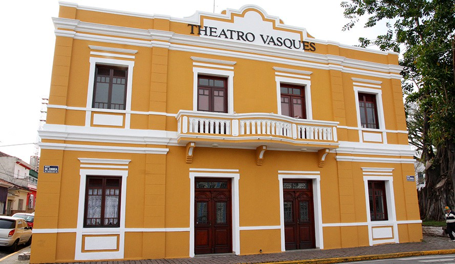
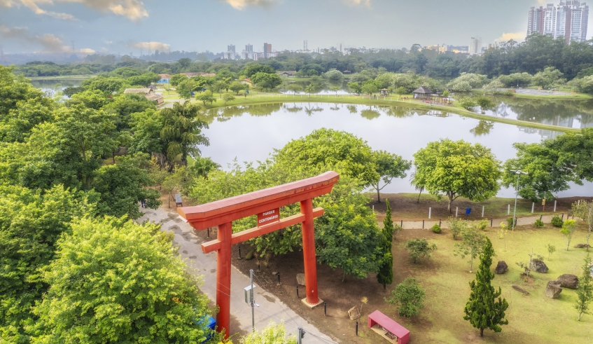

Parque Centenário
Área verde, pista de caminhada e eventos gratuitos.
Guia de Locais
Mogi das Cruzes
Locais, eventos e programação cultural em um só lugar.


Área verde, pista de caminhada e eventos gratuitos.
Acervo histórico e exposições temporárias.
Espetáculos de teatro, música e dança.
Produtos locais, gastronomia e feiras temáticas.
Trilhas sombreadas, lagos e casa de chá.
Exposições rotativas e acervo permanente.
Atividades esportivas e culturais.
Picnic, playground e anfiteatro ao ar livre.